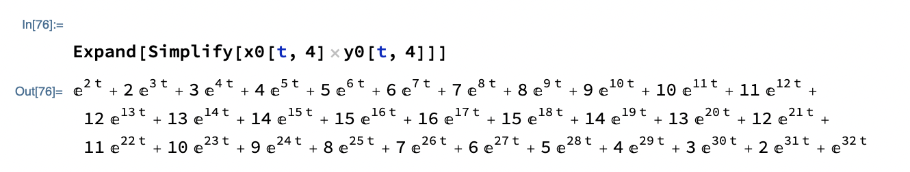
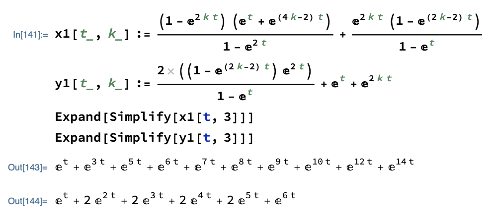
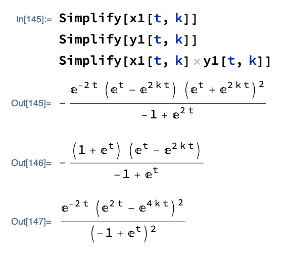
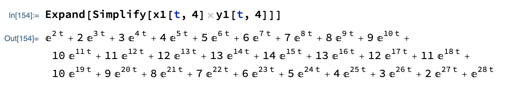
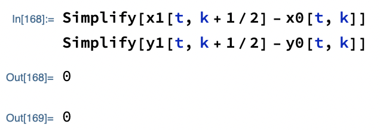
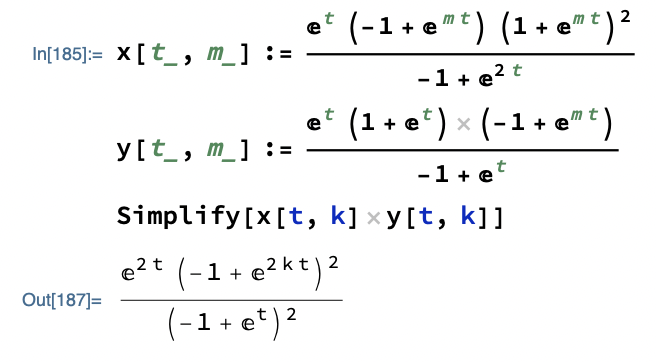
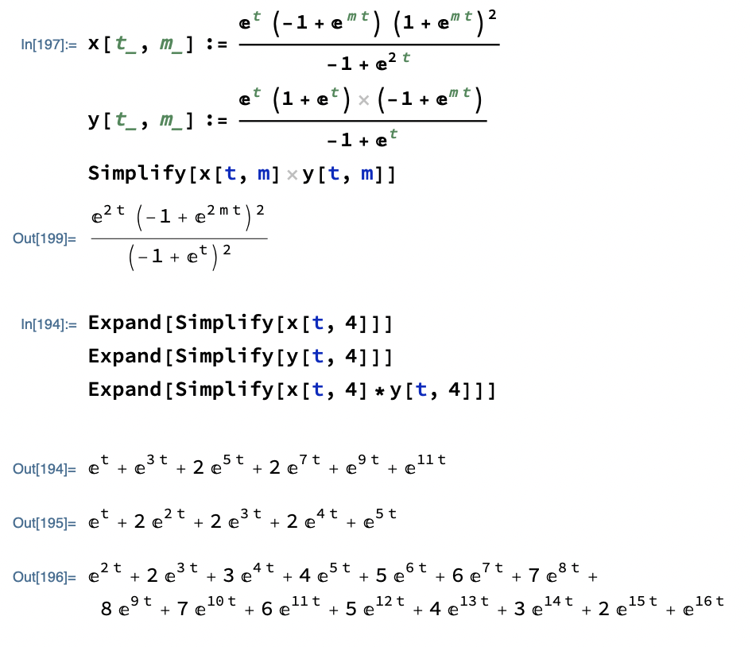

fair dice calculator
Lucas Bertocchini
the pairs of dice found here have the same distribution (summed values) when rolled as a pair of regular dice of n sides, numbered 1 through n
while making this, I found a certain class of die that appears to work for every even integer (odd integers are skipped).
the search is much faster if only this class of die is searched for, otherwise all solutions are found.
unchecking the box to find one die up to n=18 relatively quickly:
all 8-sided dice:
| die 1 | die 2 |
|---|
for dice x and y with sides xi and yi (1 ≤ i ≤ n), the particular solution being searched for when "find all dice" is unchecked:
- satisfies yi = 1 + floor(i/2)
-
appears to satisfy:
for n = 4k:- xi = 2i - 1 (i ≤ k)
- xi = 2floor(i/2) + 2k - 3 (k + 1 ≤ i ≤ 3k - 1)
- xi = 2i - 2k - 1 (3k ≤ i)
for n = 4k - 2:- xi = 2i (i ≤ k)
- xi = i + k - 1 (k + 1 ≤ i ≤ 3k - 1)
- xi = 2i - 2k (3k ≤ i)
proof for even n:
I will refer to "the generating function for a die" in the following.
By this, I mean a an exponential generating function with the
coefficients of emt
corresponding to how many sides of the die have number m.
For example, et+2e2t+2e3t+e4t
would correspond to a die with sides (1,2,2,3,3,4).
Notice that multiplying two of these generating functions gives the
distribution of outcomes for rolls of the two dice.
For example, let f(t, n)=et+e2t+...+ent
be a generating function in t for the fair n-sided die: then f(t, n)^2
gives the distribution for rolling two fair n-sided dice.
f(t, n) has the following form (this and the following results are
obtained through geometric series expansions):
in the following let x[t, k] be generating function for the corresponding die x specified above, and y[t, k] generating function for y
case n = 4k:
geometric series arguments show
(this is a bit hand-waivy to just state, but it does not take long to
derive/show that x0 (y0) indeed is the sum over i of exit
(eyit))
an example x0,y0 is given above for n=16 sided dice (k=4)
simplifying and taking their product,
notice this product expression is exactly f(t, 4k)^2, the distribution of two fair dice being rolled, so we are done with this case:
case n = 4k - 2:
geometric series arguments show
an example x1,y1 is given above for n=10 sided dice (k=3) simplifying and taking their product,
notice this product expression is exactly f(t, 4k-2)^2, the distribution of two fair dice being rolled, so we are done with this case:
wrapping up
finally, because x0 and x1 (y0 and y1) are essentially the same functions as seen here:
we can write x(t, m) and y(t, m) for any n=2m as follows:

and since their product is f(t, 2m), we can immediately see the
corresponding pair of dice is always fair
□
all nontrivial 8-sided dice:
| die 1 | die 2 |
|---|
all nontrivial 9-sided dice:
| die 1 | die 2 |
|---|
all nontrivial 10-sided dice:
| die 1 | die 2 |
|---|
all nontrivial 12-sided dice:
| die 1 | die 2 |
|---|
